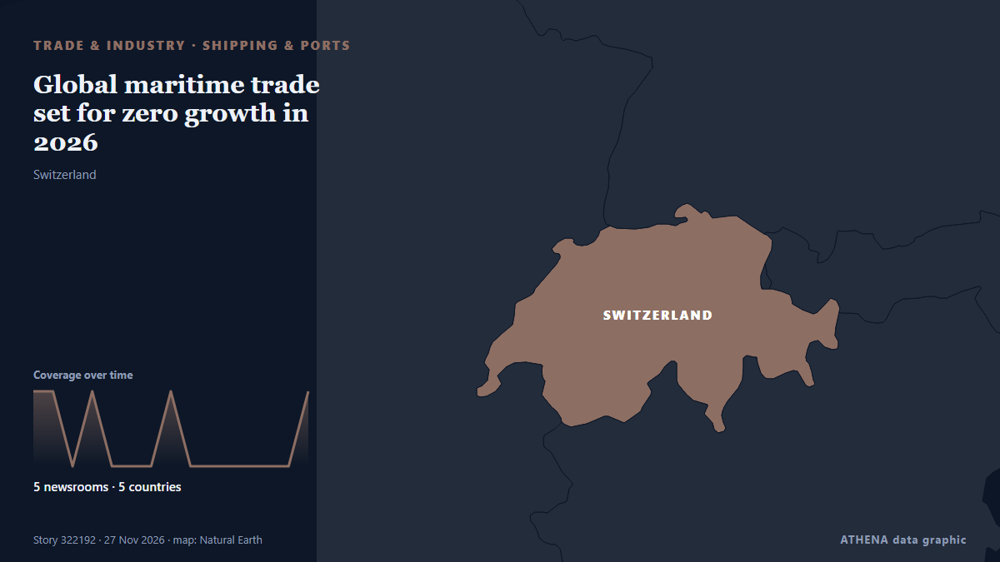

Shipping & ports
SponsoredPresented by  Cybernetics and Artificial Intelligence Lab Welcome to the Cybernetics and Artificial Intelligence Laboratory, established at the Department of Business Administration of the National and Kapodistrian University of Athens. The lab is headed by Professor Dimitrios Thomakos. The lab aims to do research that can be published in top venues. Our research uses tools and methods of Artificial Intelligence, and lies in the following areas: - Forecasting - Decision making - Cyber security - Finance We are always looking forward to collaborating with exceptional students!
Cybernetics and Artificial Intelligence Lab Welcome to the Cybernetics and Artificial Intelligence Laboratory, established at the Department of Business Administration of the National and Kapodistrian University of Athens. The lab is headed by Professor Dimitrios Thomakos. The lab aims to do research that can be published in top venues. Our research uses tools and methods of Artificial Intelligence, and lies in the following areas: - Forecasting - Decision making - Cyber security - Finance We are always looking forward to collaborating with exceptional students!
| 14 Nov | 0 |
|---|---|
| 15 Nov | 1 |
| 16 Nov | 0 |
| 17 Nov | 0 |
| 18 Nov | 0 |
| 19 Nov | 1 |
| 20 Nov | 0 |
| 21 Nov | 0 |
| 22 Nov | 0 |
| 23 Nov | 6 |
| 24 Nov | 8 |
| 25 Nov | 2 |
| 26 Nov | 2 |
| 27 Nov | 0 |

Global maritime trade set for zero growth in 2026
UN Trade and Development forecasts zero growth after 1.9% increase in 2025 as longer shipping routes drive up fuel costs and freight rates. from Anadolu Agency (English)
Authorities intercept more than 3 tonnes of meth on Pacific 'mothership'
The 3.3 tonnes of drugs were found on an unflagged tanker, which experts have dubbed a "mothership". from ABC News Australia
Mintra And Ledgid Explore Collaboration To Connect Maritime Digital Identity, Learning And Workforce Development
Mintra® and LEDGID are exploring opportunities to bring together complementary capabilities in digital learning, maritime training, professional identity and verified records. from Hellenic Shipping News
NextWave Seafarers: Global Partners Come Together To Open Doors To Careers At Sea
Access to onboard training remains one of the biggest barriers facing aspiring seafarers around the world. from Hellenic Shipping News
Everllence and COSCO SHIPPING Advance Fleet Digitalisation
On November 23, 2026, Everllence signed a Memorandum of Understanding (MoU) with China COSCO SHIPPING Corporation Limited (COSCO SHIPPING). from The Maritime Executive
APM Terminals Maasvlakte II and Port of Rotterdam Authority take next step in terminal development
APM Terminals Maasvlakte II and the Port of Rotterdam Authority are moving forward in terminal’s development with preparations for a. from Cyprus Shipping News
Maersk Orders 12 Ultra-Large Dual-Fuel Container Ships
Maersk has ordered 12 ultra-large container ships scheduled for delivery in 2030 and 2031, which will become the biggest vessels in its fleet, a company spokesperson said on Tuesday.The vessels, each… from MarineLink
IRGC Reports Three Tankers Exploded in Hormuz After Hitting Mines
Iran's Revolutionary Guards navy reported that three tankers exploded and caught fire in the Strait of Hormuz after striking naval mines ... from IranWire
Explosion occurs on LNG carrier in Strait of Hormuz
Ahmad Hayat-Moghaddam, Vice Chairman of the Iranian Parliament’s National Security and Foreign Policy Committee, announced on Tuesday, N ... from IranWire
Nguyen Hue Pedestrian Street lights up with 3D mapping show on Vietnam Culture Day
A spectacular 3D mapping show lit up the facade of Rex Hotel Saigon on Nguyen Hue Pedestrian Street on Tuesday night as part of Ho Chi Minh City's Vietnam Culture Day celebrations. from Tuoi Tre News
Hormuz crisis drives global energy supply shock
Disruptions to shipping through the Strait of Hormuz have triggered the world's largest energy supply shock, prompting Gulf producers to consider billions of… from Daily Tribune
4th Abu Dhabi Maritime Awards honours winners
Under the patronage of His Highness Sheikh Hamdan bin Zayed Al Nahyan, Ruler’s Representative in the Al Dhafra Region; in. from Cyprus Shipping News
MSC Cruises launches winter sailings from Piraeus, strengthening Greece’s year-round homeport role
Using Piraeus as its home port and the Mediterranean as its destination, MSC Cruises is giving Greek travellers more reasons to choose a cruise during the winter months. from Naftemporiki (English)
Singapore Shipping orders PCTC pair from Guangzhou Shipyard International
First partnership to deliver LNG dual-fuel car carriers for the owner’s long-term fleet renewal and low-carbon shipping road map. from Seatrade Maritime
Le Pen Condemns Turkey Over Libya Maritime Deal, Cites UNCLOS
French far-right politician backs Egypt's position in eastern Mediterranean dispute; Greece's considers agreement as baseless and illegal. from to vima
Grounded Bulk Carrier MIRO G Successfully Refloated Off French Beach
French authorities have successfully refloated the Malta-flagged bulk carrier MIRO G, four days after the vessel ran aground on France’s Atlantic coast during severe weather. from gCaptain
UK reports strike on bulk carrier off UAE coast
The United Kingdom Maritime Trade Operations (UKMTO) reported on Tuesday that a bulk carrier was struck by an unknown projectile 23 nautical miles northeast of Khor Fakkan, the United Arab Emirates… from AzerNews
24-hour strike by Greek seafarers on November 25
Athens, Greece (Ports Europe) November 23, 2026 – Greek seafarers’ unions will start a nationwide 24-hour strike on November 25, from 00:01 to midnight. from Ports Europe
UN food agency chief warns wars jeopardize food aid for 7.3 million more people
World Food Programme Executive Director Luke Lindberg warned on Monday that shipping chokepoints linked to… from BusinessWorld